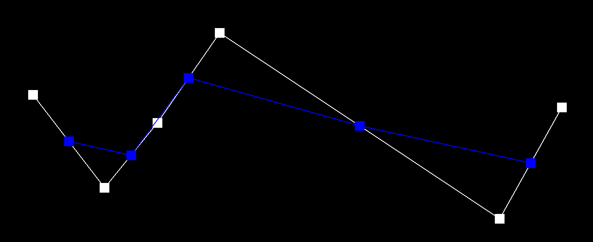

First level of interpolation. Blue squares are the interpolated points.

I had a lot of fun building up this mesh editor! We first use de Casteljau in tasks 1 and 2 to evaluate Bezier curves and surfaces, a technique that turns control points into smooth curves/surfaces. In task 3 we implement area-weighted vertex normals to provide a more realistic and smooth shading as compared to flat shading. Finally, we explore how mesh upsampling converts a coarse mesh into a higher-resolution, smooth mesh. We implement remeshing operations -- edge flip and split -- in Tasks 4 and 5 which will be used in Task 6's loop subdivision. Loop subdivision is one way to upsample a mesh by subdividing each triangle in the mesh and updating vertices based on a weighting scheme. While doing these tasks, I learned that drawing out and labeling example meshes is an important step for coding up remeshing operations. This helped immensely when tracking down pointer reassignment bugs!
De Casteljau subdivision is a recursive algorithm used to create smooth Bezier lines/curves from points (Fig 1). At each level of the recursion, we take \(n\) points \(p_i\) from the previous level and use linear interpolation (lerp) with parameter \(t\) to derive \(n-1\) new points. $$lerp(p_{i-1}, p_i, t) = (1-t)p_i + tp_{i-1}$$
We recurse until we have a single point. The Bezier curve is drawn through this resulting point and connects the original endpoints. See Figure 2 below.
Dragging around the control points in the GUI created another curve in Figure 3.
Evaluating Bezier surfaces with de Casteljau can be thought of as performing 1D de Casteljau in 2 directions (Fig 4). We have as an input a \(n x n\) array of control points. Each row in this array defines a Bezier curve with parameter \(u\). We can thus use our Task 1 implementation to derive a final point for each row. With the resulting \(n\) points, we can evaluate another Bezier curve with parameter \(v\). We then finally get a single point - the point on the Bezier surface with parameter \((u, v)\).
The figure below demonstrates the result of the implementation described above.
Area-weighted vertex normals are used in Phong shading to achieve a smoothness not possible with flat shading. We can compute this normal by noting the following: for a triangular face, taking the cross product of two edges of the face results in a vector \(n\) normal to the face with a magnitude that scales with its area. Thus, to calculate an area-weighted vertex normal, we calculate \(n\) for every face incident to the vertex, sum them up, and normalize. The resulting effect is shown in figure 6.
I implemented the edge flip operation by following the recommended guidelines. I drew a simple mesh with every item labeled before and after an edge flip (Figure 7). In my code, I reassigned every element based on the sketch, and then deleted redundant pointer reassignments. Because of this, I had only a few minor bugs that I caught easily.
The result of various edge flips on a mesh can be seen in the figure below.
I implemented edge split similarly to edge flip. I once again sketched a mesh before and after a split and assigned pointers accordingly (Figure 9). I also implemented the extra credit task of handling boundaries. I ran into quite a few bugs here because I tried to skip the sketch portion and could not track pointers as effectively. I finally ended up drawing out the boundary case as well, and was able to get it working properly.
Figure 10 below demonstrates the effect of both edge flips and splits on a mesh.

Loop subdivision is one technique that allows us to upsample meshes. We subdivide each triangle in the mesh into 4 smaller triangles by splitting then flipping edges (Figure 11a). We then update vertices based on a weighting scheme mentioned in the spec. I followed the spec recommendations for implementing this procedure: I computed new vertex positions using the original mesh, subdivided via splits and flips, and finally updated all vertex positions. I additionally handled the extra credit boundary case (Figure 14), using the weighting scheme for creases and boundaries discussed in lecture (Figure 11b).
The effect of loop subdivision can be seen in the figures below. The overall mesh becomes smoother and appears to take up less space in some cases (Figure 12).
Corners and sharp edges are rounded out, although don't completely disappear. This may be because the corners are extraordinary points (vertices that have a degree other than 6) and stands out from the rest of the mesh in the example below. I tried to ameliorate this by splitting edges so that the corners did have a degree of 6. The corners were smoothed out, although the way I split edges created extraordinary points elsewhere in the mesh (Figure 13).
Additionally, notice how in Figure 12 the cube subdivides asymmetrically. This is because the mesh is not regular - the corner vertices have different degrees. For a good mesh, we should try to have regular vertex degrees, which contributes to better triangle shape and a better outcome for loop subdivision. I split edges so that every vertex has a degree of six except for the vertex at the center of each face which ended up having a degree of four (Figure 13). This made the cube symemtrical during loop subdivision.
For the extra credit task of handling boundaries, I added a check for if the vertex was on a boundary in the compute vertex position helper methods. I then used the alternate weighting scheme (Figure 11b). The result can be seen below.